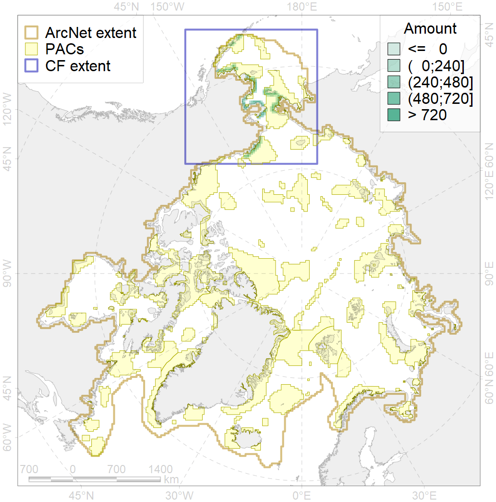
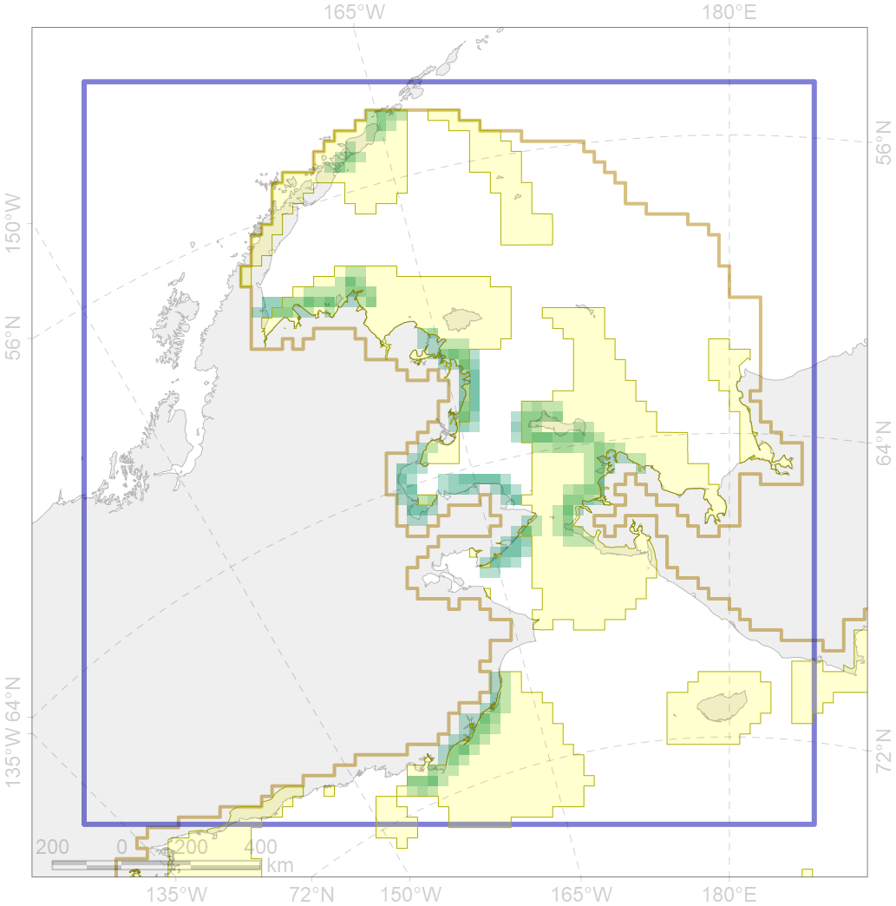

4005

| CF ID | 4005 |
| CF Name | Spawning areas of the Pacific Capelin (Mallotus villosus catervarius) in Alaska |
| Time Period | 1980s-2010s |
| Source(s) | Ecological Atlas of the Bering, Chukchi, and Beaufort Seas (Smith et al., 2017). |
| Seasonality | May-August |
| Depth Horizon | 0-5 |
| Methodology | Map based on publications produced after field studies |
| Author Name | N. Chernova |
| Notes | |
| Conservation Target Set in the Scenario | 0.18 |
| Conservation Target Achieved in the Scenario | 0.686 (Scenario: 381.0%) |
| PAC ID | Proportion in the PAC | Contribution to ArcNet Target Achievement | PAC’s Contribution to the Achieved Target |
|---|---|---|---|
| 1 | 4.5% | 24.9% | 6.5% |
| 3 | 24.1% | 123.0% | 32.3% |
| 5 | 29.7% | 162.2% | 42.6% |
| 6 | 0.3% | 1.6% | 0.4% |
| 60 | 15.8% | 65.5% | 17.2% |
| inner | 74.3% | 377.3% | 99.0% |
| outer | 25.7% | 3.7% | 1.0% |